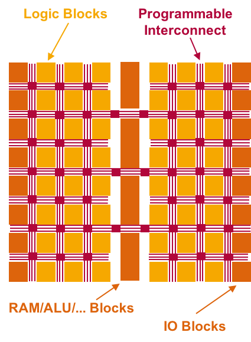
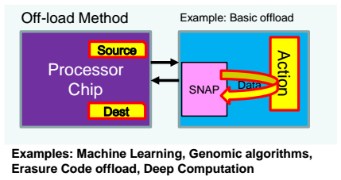
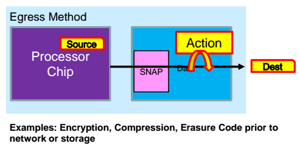
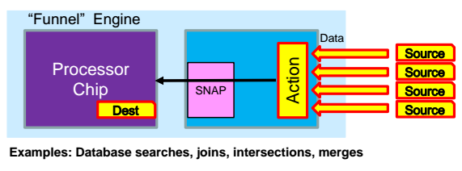

Motivation and use cases
In comparison to other hardware accelerators that provide parallel processing capabilities, FPGAs are very flexible in terms of the possible application scenarios (compared to on-chip accelerators) while being orders of magnitude more power-efficient compared to graphics cards (GPGPU acceleration) because of their lower clock frequency.

Thanks to their generic structure, FPGAs can be programmed to suit various use cases
Traditionally however, it was very time consuming and difficult for an application programmer to implement FPGA-based accelerators. The type of 'hardware programming' that is necessary is quite different from well-known programming paradigms used in imperative languages such as C or Java. Not only is a detailed knowledge of the targeted FPGA architecture needed to optimize the hardware descriptions; a lot of time is often spent to establish communication channels and management interfaces used by the consuming application.
In order to overcome these issues, IBM provides the CAPI and SNAP frameworks discussed here. They allow a broader group of developers to leverage FPGAs for their applications.
FPGA-based acceleration paradigms
Depending on the use case it is possible to obtain FPGAs that are equipped with additional external interfaces on the chip (e.g. network and storage interfaces). This extends the possible application scenarios of FPGAs: They can operate 'closer' to the incoming/outgoing data, meaning that a flexible pre-/postprocessing of the data can be implemented transparently to the CPU. The resulting usage paradigms are detailed in the following sections.
Offloading parallel computation tasks from the CPU to the FPGA

Off-load Method
This is the most traditional use case for accelerators: The host application provides source- and destination buffers for the task data, invokes the parallel processing action on the accelerator and continues processing once the action completes. Consequently, this approach requires a transfer of the source data from the host to the FPGA and another transfer of the results back to the host. For the time the FPGA is busy, the host CPU is free to perform other tasks; effectively reducing its load compared to a CPU-only implementation of the workload (off-loading).
Real-world benefits of this approach are however limited by the effective data bandwidth that the underlying bus (e.g. PCIe) supports. Application scenarios should focus on throughput instead of latency (which the CPU is optimized for, with its caches and prefetchers). As a prerequisite, parallelizable application procedures have to be identified and isolated, which can be difficult depending on the use case. Once implemented, the possible performance gains are likely to improve over time because, in contrast to CPUs, GPUs and FPGAs are still expected to significantly increase their computation power per watt over new hardware generations (Dennard scaling).
Examples: Machine Learning, Genomic algorithms, Erasure Code offload, Deep Computation
Transforming data before it is sent to network or storage

Egress Method
Depending on the hardware capabilities of the FPGA (i.e. integrated network or storage adapters; on-chip non-volatile memory) this paradigm can be used to transform streaming data directly on the FPGA. Furthermore, CPU load is reduced by taking over I/O operations such as communication with network devices over certain protocols. Application examples include encryption and compression algorithms as well as adding an erasure code prior to sending data to network or storage.
Transforming or filtering data received from network or storage
Ingress Method
The same technique as above can also be applied in the inverse direction: Communication with external devices is handled by the FPGA and incoming data streams can be pre-processed and filtered. Examples: Video Analytics, Deep Packet Inspection (DPI) and Video Encoding (H.265).
Aggregating data received from multiple external sources

Funnel Engine
If large amounts of data are received from various different sources, the Ingress paradigm can be extended to become a funnel: This scenario is especially interesting when the combined input bandwidth of all connected external sources is greater than the available bandwidth from the FPGA to the CPU (otherwise: 'drips into the funnel'). One application example could be to pre-filter or pre-aggregate incoming sensor data to reduce the amount of data that needs to be transferred via PCIe buses to the CPU. Further use cases include database searches, joins, intersections, and merges.